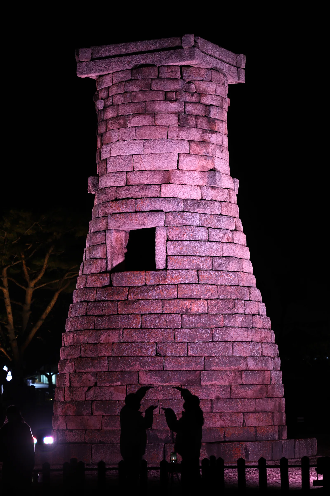
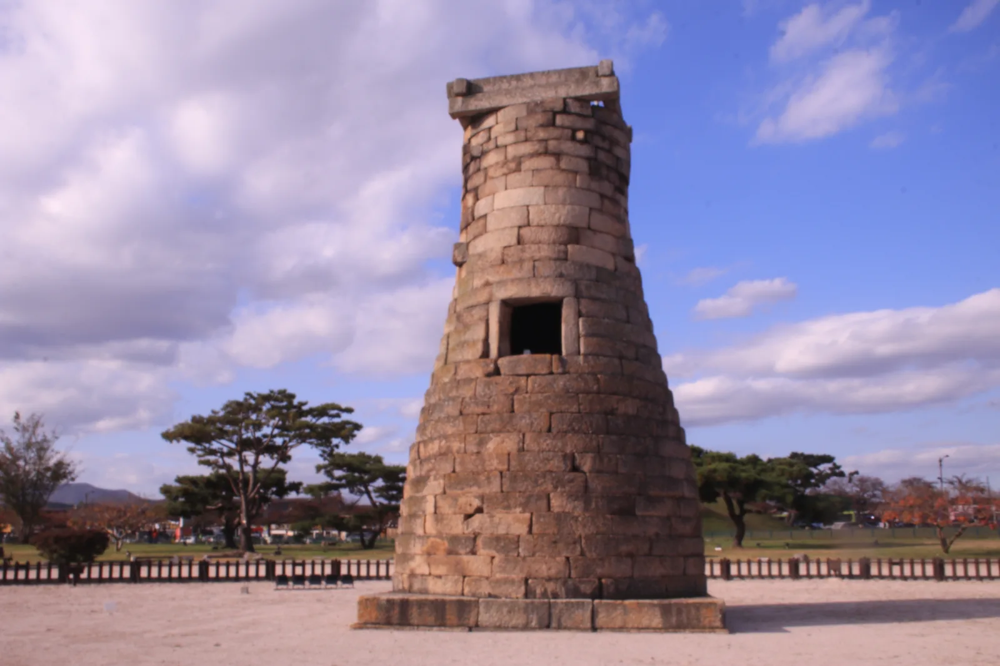
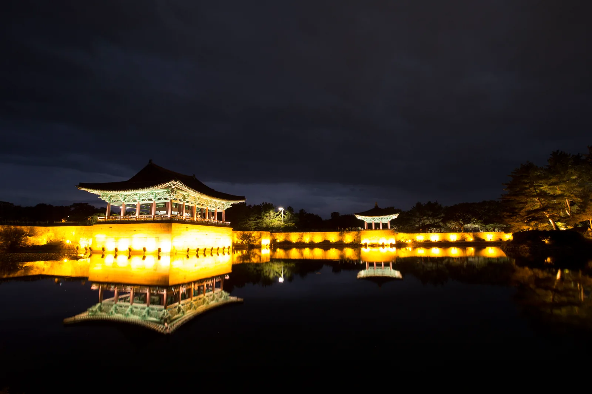
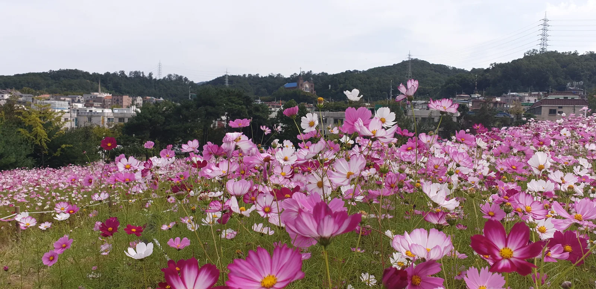
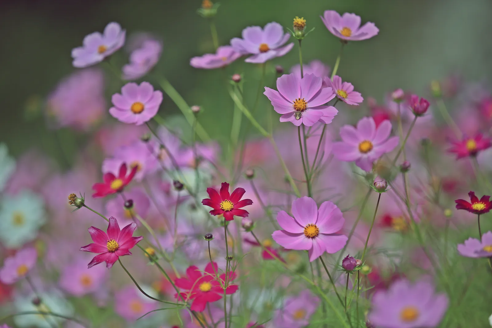
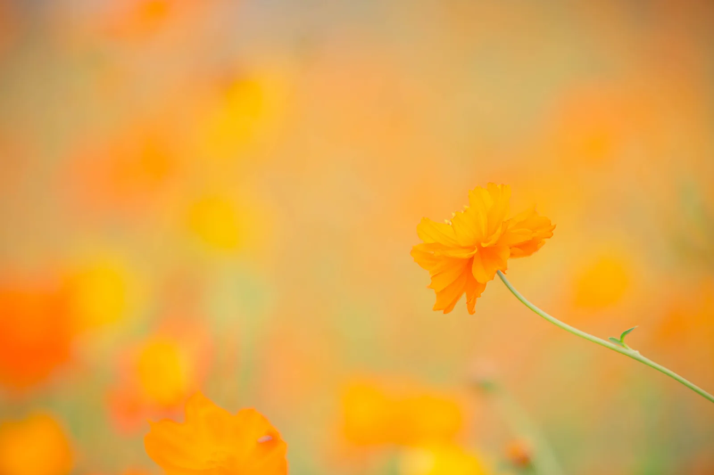

▲ 야간 경관조명 아래 붉은빛으로 물든 첨성대. 해가 지면 하루 세 차례, 7분씩 신라 천문학과 황금 문화를 그려내는 미디어아트가 이 외벽 위에 펼쳐진다
해가 지고 나면 첨성대는 다른 얼굴을 한다. 낮 동안 천오백 년 전 신라인의 천문 관측소로 조용히 서 있던 돌탑이, 밤이 되면 외벽 전체를 캔버스 삼아 빛으로 다시 태어난다. 2025년 하반기 처음 선보인 첨성대 미디어아트는 반응이 예상을 넘어서며 2026년 현재까지 상시 연장 운영 중이다. 여기에 동궁과 월지의 은은한 야간조명, 대릉원 돌담길을 따라 이어지는 가을꽃까지 더하면 경주 구시가지 자체가 하나의 야간 관광 코스가 된다. 계절도 딱 맞다. 9월 중순부터는 첨성대 앞과 분황사 일대에 코스모스가 절정으로 피어나, 낮에는 꽃, 밤에는 빛이라는 두 가지 경주를 한 번에 즐길 수 있다.
1. 첨성대, 하루 세 번 빛이 된다

▲ 낮에 본 첨성대. 동양에서 가장 오래된 천문대로 알려져 있으며, 국보로 지정돼 외부 관람만 가능하다 ⓒ 공유마당(한국저작권위원회)
첨성대 자체의 관람시간은 매일 오전 9시부터 오후 10시까지이며, 국보로 지정된 문화유산이라 울타리 안으로 들어갈 수는 없지만 외부에서 둘러보는 데는 별도 요금이 없다. 진짜 볼거리는 해가 완전히 진 뒤 시작되는 미디어아트다. 10억 원을 들여 노후한 수목 투사등 18개를 전면 교체하고 고성능 빔프로젝터 4대를 새로 배치해, 첨성대 외벽에 신비로운 영상 콘텐츠를 투사하는 방식이다. 메인 컨셉은 '빛의 도시, 첨성대의 부활'. 박혁거세 신화부터 별자리, 우주를 향한 염원까지 신라 마립간 시대의 역사와 한국 천문학의 기원, 황금 문화를 7분짜리 영상 한 편처럼 웅장하게 스토리텔링한다. 상영은 하루 3회, 저녁 6시 30분·7시 30분·8시 30분 전후로 진행되며 회차마다 7분 정도 걸린다. 다만 폭우나 태풍 등 기상이 악화되면 안전과 시설 보호를 위해 탄력적으로 운영되거나 상영이 중단될 수 있으므로, 방문 전 경주시 공식 채널에서 당일 운영 여부를 확인하는 편이 안전하다.
경주문화관광에서 확인 가능2. 동궁과 월지·대릉원 돌담길 — 함께 도는 야간 코스

▲ 동궁과 월지의 야간 조명. 연못 수면에 전각이 그대로 비쳐 경주 야경의 대표 장면으로 꼽힌다 ⓒ 공유마당(한국저작권위원회, 조상근)
첨성대에서 도보 10분 거리에 있는 동궁과 월지는 통일신라 왕실의 별궁 연못이었던 곳으로, 야간조명이 수면에 그대로 반사돼 경주에서 가장 유명한 야경 명소로 꼽힌다. 관람시간은 매일 오전 9시부터 오후 10시까지(입장 마감 오후 9시 30분)이며, 입장료는 어른 3,000원·청소년 2,000원·어린이 1,000원이다. 야간조명은 계절에 따라 점등 시각이 달라지는데, 여름철 기준 오후 7시 30분~8시 사이에 켜지므로 일몰 직전에 입장해 낮의 유적과 조명이 들어온 밤 풍경을 한 번에 보는 동선을 추천한다. 무료 전용 주차장도 갖추고 있지만, 야경을 보려는 인파가 몰리는 저녁 시간대에는 입장 마감 직전 도착 시 대기가 길어질 수 있다.

▲ 가을이면 경주 곳곳에 코스모스 꽃밭이 펼쳐진다. 첨성대와 대릉원을 잇는 동부사적지 일대도 대표적인 개화지다 ⓒ 공유마당(한국저작권위원회)
동궁과 월지를 나와 대릉원 방향으로 걸으면 만나는 것이 대릉원 돌담길이다. 황남빵 본점 앞에서 대릉원 정문까지 이어지는 이 돌담길은 별도의 운영시간이나 입장료 없이 언제든 걸을 수 있는 산책로로, 흙담과 왕릉의 능선이 어우러진 풍경 덕분에 경주에서 가장 사진이 잘 나오는 골목으로 꼽힌다. 봄에는 벚꽃, 가을에는 코스모스와 은은한 조명이 어우러져 계절마다 다른 얼굴을 보여준다.
| 명소 | 운영시간 | 요금 | 포인트 |
|---|---|---|---|
| 첨성대 | 09:00~22:00 | 무료(외부 관람) | 미디어아트 하루 3회·7분 |
| 동궁과 월지 | 09:00~22:00(입장마감 21:30) | 어른 3,000원 | 수면에 비친 야간조명 |
| 대릉원 돌담길 | 상시 개방 | 무료 | 황남빵~대릉원 정문 산책로 |
| 대릉원(능 내부) | 09:00~22:00 내외 | 유료(별도) | 왕릉 내부 관람 시 필요 |
3. 코스모스 물결 — 첨성대 앞부터 분황사까지

▲ 9월 들어 절정을 맞는 코스모스. 분황사와 황룡사지 일대는 8월 초 황화코스모스를 시작으로 9월이면 넓은 꽃밭이 펼쳐진다 ⓒ 공유마당(한국저작권위원회, 유주영)
경주는 야경 못지않게 가을꽃으로도 유명하다. 대표 명소는 첨성대에서 도보로 이동 가능한 분황사·황룡사지 일대로, 8월 초 황화코스모스 개화를 시작으로 9월이면 황룡사 역사문화관을 배경으로 한 넓은 코스모스밭이 절정을 이룬다. 관람은 연중무휴 무료다. 첨성대 바로 앞 화단에는 국화, 코스모스, 해바라기, 아스타 국화 등 10가지가 넘는 꽃이 함께 피어 있어 첨성대와 꽃을 한 프레임에 담기에도 좋다. 첨성대·월성·동궁과 월지를 잇는 동부사적지 일대에도 코스모스가 폭넓게 개화한다. 참고로 같은 첨성대 일원에서 가을마다 화제가 되는 핑크뮬리는 카프리즘이 이미 별도로 다룬 적이 있으니, 이번 글에서는 코스모스·국화 위주로 짧게만 짚는다.
📍 사진이 잘 나오는 시간대
코스모스와 야간조명을 한 번에 담고 싶다면 일몰 30분 전부터 일몰 직후가 가장 좋다. 하늘에 푸른빛이 남아 있는 동안 꽃과 조명의 노출 차이가 크지 않아 사진이 자연스럽게 나온다. 첨성대 미디어아트 1회차(오후 6시 30분 전후)와 시간이 겹치는 경우가 많아, 코스모스밭을 먼저 둘러본 뒤 첨성대로 이동하는 동선이 효율적이다.
4. 주차는 어디에 — 성수기 혼잡 피하는 법

▲ 경주 가을 여행의 상징과도 같은 코스모스 ⓒ 공유마당(한국저작권위원회)
대릉원 정문 앞에는 공영주차장이 있어 소형차 기준 2시간까지 2,000원, 이후 매 시간 1,000원씩 추가된다(운영시간 07:00~22:00). 대릉원과 첨성대 사이 도로변에는 노상 공영주차장이 별도로 있는데, 최초 30분 500원에 이후 10분당 200원이 붙는 방식이라 짧게 머무는 경우가 아니면 요금이 금세 늘어난다(운영시간 09:00~20:00). 장애인, 국가유공자, 다자녀 가구, 경차·친환경차는 50% 할인을 받을 수 있다. 주말이나 연휴 저녁에는 두 주차장 모두 만차가 되기 쉬운데, 이럴 때는 조금 걸어야 하더라도 쪽샘지구 공영주차장을 이용하는 편이 낫다. 규모가 크고 완전 무료로 운영돼, 대릉원·첨성대·황리단길 어디로도 도보 이동이 가능한 거리다.
체크포인트
- 주차 요금·혼잡도는 시설관리공단 사정에 따라 바뀔 수 있어, 방문 당일에는 현장 안내판이나 경주시설관리공단(☎ 054-750-8500)에 재확인하는 것이 안전하다.
- 첨성대 미디어아트는 상시 연장 운영 중이지만 우천 시 탄력 운영되므로, 비 예보가 있는 날은 방문 전 상영 여부를 확인하자.
5. 대중교통으로 가는 법
KTX 신경주역에 내렸다면 60번이나 61번 버스를 타면 대릉원 후문·정문과 첨성대, 황리단길까지 한 번에 닿는다. 50·51·60·61·70·700번 버스는 모두 신경주역을 거쳐 성동시장(옛 경주역)과 경주 시외·고속버스터미널을 연결하므로, 시외버스로 도착했다면 터미널에서 같은 노선을 타면 된다. 경주 시내 관광의 정석으로 꼽히는 '10번 버스타고 경주여행' 코스도 첨성대와 동궁과 월지(안압지)를 거쳐 보문관광단지, 불국사까지 이어지므로 하루 일정을 짤 때 참고할 만하다. 첨성대·대릉원·동궁과 월지는 서로 도보 10~15분 거리에 모여 있어, 대중교통으로 구시가지에 진입한 뒤에는 걸어서 세 곳을 모두 도는 것도 충분히 가능하다.
경주 버스 여행코스 확인 가능6. 정리
체크포인트
- 첨성대 미디어아트는 무료, 하루 3회(18:30·19:30·20:30 전후)·회당 7분, 2026년 현재도 상시 연장 운영 중이다.
- 동궁과 월지는 09:00~22:00(입장마감 21:30) 운영, 어른 3,000원이며 일몰 후 야간조명이 켜진다.
- 대릉원 돌담길은 상시 개방·무료로, 별도 시간 제약 없이 언제든 걸을 수 있다.
- 가을꽃은 분황사·황룡사지와 동부사적지 일대 코스모스가 9월 절정이며, 첨성대 앞에는 국화·코스모스 등 10여 종이 함께 핀다.
- 주차는 대릉원 정문·첨성대 노상 주차장이 유료(2시간 2,000원 안팎)이고, 혼잡할 때는 무료인 쪽샘지구 공영주차장이 대안이다.
- 대중교통은 신경주역·경주 터미널에서 60·61번 등 버스로 첨성대·대릉원·황리단길에 바로 접근할 수 있다.